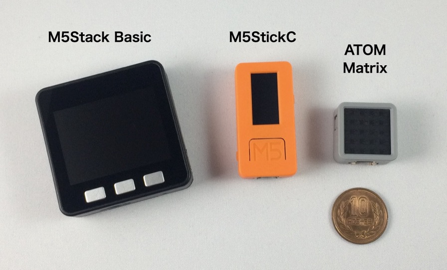
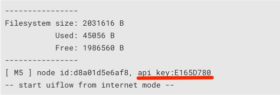

M5Stack社の製品にまつわる新情報をまとめてお届けする「M5Stackマンスリーアップデート」のコーナーです。
2020年4月は次の製品の販売が始まりました。
中でも一番のニュースは、国内でATOM Matrix、ATOM Liteの販売が始まったことです。

ATOM Matrix、ATOM LiteはM5Stack、M5StickCに続く新しい開発モジュールです。上の写真の左からM5Stack Basic、M5StickC、ATOM Matrixです。M5Stack、M5StickCにあった液晶画面がなくなり、24 x 24ミリと小さくなりました。M5Stack、M5StickCと比べるとその小ささが分かります。おもちゃやIoT端末などのコントローラとしてとても便利に使えそうです。
内部にはM5StackやM5StickCと同じESP32というマイコンが搭載されています。ESP32に内蔵される通信モジュールにより、Wi-FiとBluetoothで通信できます。プログラムはArduino、UI Flow、MicroPythonで作ることができます。
ATOMの主なスペックをM5Stack、M5StickCと比べてみました。
まずUI FlowでATOMを動かす方法を見てみます。UI Flowの準備や使い方はM5Stackカフェ「LEDを点滅させる」をご覧ください。
最初にM5BurnerでATOMにファームウェアを書き込みます。2020年5月時点で最新のUIFlow-v1.5.1、v1.5.2というバージョンでは書き込むデバイスとしてATOMが選択肢に現れないので、UIFlow-v1.4.5.1を選びます。ATOMをUSBケーブルでパソコンに接続し、M5BurnerでUSBデバイスを選び、右上の「Series」から「ATOM-Matrix」を選びます。
「Erase」ボタンをクリックしてファームウェアを消去し、「Burn」ボタンでファームウェアを書き込みます。ファームウェアを書き込んだら、ターミナルソフトを立ち上げてATOMがつながっているUSB回線を選び、ATOMのリセットボタンを押します。すると次のようなメッセージが表示され、その中にAPIキーが表示されます。

ブラウザでUI Flowを立ち上げ、先程表示されたAPIキーを入力し、デバイスとして「Atom-Matrix」を選択します。
左側のUI画面にはATOMが表示され、「ハードウェア」メニューにはRGBカラーと加速度＆ジャイロが現れます。RGBカラーを見ると、5 x 5 のマトリックスLEDを制御するためのブロックが表示されます。
あとは好きなブロックを選んで組み合わせることで、ATOMを動かすことができます。
Arduinoでのプログラミングの方法です。
Arduino IDEを立ち上げて、「ツール」メニューから「ライブラリを管理…」を選んで、ライブラリマネージャを立ち上げます。検索窓に「atom」と入力して、「M5Atom」ライブラリをインストールします。
「M5Atom」ライブラリをインストールすると、「ファイル」メニューの「スケッチ例」に「M5Atom」が追加されます。その中の「Buttom」と書かれたスケッチを選んでみましょう（Buttonのスペルミスだと思います）。
ビルドするには、最初にボードを選択しますが、2020年5月時点では「M5ATOM」はありません。代わりに「M5StickC」を選びます。シリアルポートを選択して、ビルドボタンをクリックすると…
FastLED.h: No such file or directory
エラーが出てしまいました。FastLED.hがないということなので、ライブラリマネージャで「FastLED」をインストールします。
これでビルドができて、プログラムが動き出します。ATOMのマトリックスLEDがスイッチになっていて、これを押すと、押すたびにLEDの色が赤、緑、青と変化します。
Arduinoのスケッチの書き方はM5StackやM5StickCとほぼ同じです。スケッチの先頭にM5Stackでは #include <M5Stack.h> 、M5StickCでは #include <M5StickC.h> と書きますが、ATOMでは #include <M5Atom.h> と書くようにします。
スケッチ例には「Button」の他に「LEDDisplay」「LEDSet」「MPU6886」があります。
「LEDSet」はマトリックスの左上のLEDだけの色を変えるサンプル、「MPU6886」は加速度とジャイロセンサの値をシリアルに出力するサンプルです。「LEDDisplay」はマトリックスLEDに何かを表示するようなのですが、著者の環境では何も表示されませんでした。
ATOMは10円玉の直径と同じぐらいのサイズと、とても小型ながら、ESP32が搭載され、UI FlowやArduinoでプログラミングできるので、アイデア次第でいろいろな使い方ができそうです。